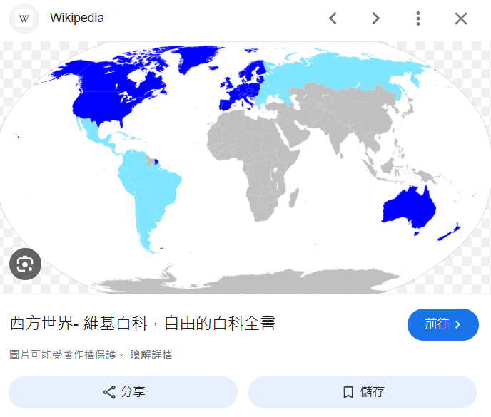
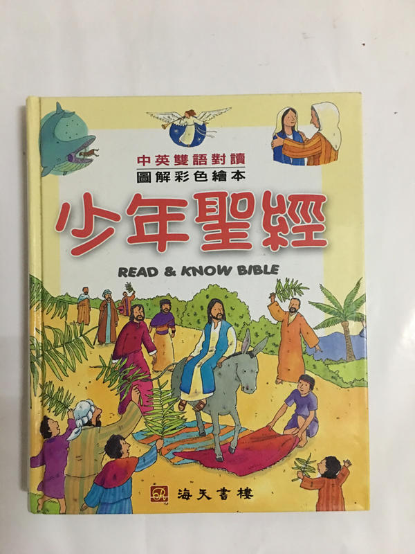
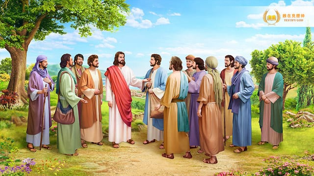

點擊上方的語言選單以切換語言
我們今天看到的基督教元素，如聖水、十字架、教堂、修道院、神父、聖騎士，往往帶有濃厚的歌德式陰暗奇幻感。在影視、遊戲甚至日常生活中，這種符號被廣泛認知為「西方基督教文化」。然而，這其實是一種歐化版本的基督教呈現，與原始基督教的世界觀和故事背景有著明顯差異。


原始基督教誕生於地中海東部地區，包括以色列、巴勒斯坦、埃及等地。故事舞台常見沙漠、曠野、橄欖林和河谷，充滿異域感。因此，聖經裡的人物的外觀幾乎都是黑髮、深色眼睛與較深的膚色，而非歐洲藝術常描繪的金髮碧眼形象。在一些考究的聖經動畫或繪本中，會看到更貼近歷史事實的描繪方式。
相對地，歐化基督教奇幻則是經過中世紀歐洲文化濾鏡，背景多是城堡、森林和哥德式山谷。


圖：耶穌與門徒，其服飾風格很明顯是中東服飾而非歐洲服飾，由此可見聖經裡的場景是西亞地區而非歐洲
在原始基督教中，主要角色包括上帝、耶穌、天使和普通信徒，敵人多半是抽象的道德邪惡，如罪或撒但，以及迫害者。神蹟經常直接介入人類事件，信仰是核心力量。
而歐化基督教奇幻則更強調人類角色，如神父、修道士、聖騎士、吸血鬼獵人、女巫獵人，以及英雄式冒險者。敵人則具體化為吸血鬼、狼人、女巫等超自然生物，神往往隱去，人類必須依靠聖物、符咒或武力戰勝敵人。
| 項目 | 聖經原始奇幻 | 歐化基督教奇幻 |
|---|---|---|
| 地理背景 | 沙漠、曠野、橄欖林、河谷 | 歐洲城堡、森林、哥德式山谷 |
| 主要角色 | 上帝、耶穌、天使、信徒 | 神父、聖騎士、吸血鬼獵人、獵巫人、冒險者 |
| 敵人類型 | 罪、撒但、迫害者 | 吸血鬼、狼人、女巫、幽靈、惡魔等魔法生物 |
| 戰鬥方式 | 神蹟直接介入：治癒、平靜風浪、分開紅海 | 人類依靠聖物、符咒、武器與智慧戰鬥 |
| 象徵物 | 十字架、信仰、牧羊背景 | 十字架、聖水、盔甲、哥德教堂 |
| 世界氛圍 | 光明與神蹟共存 | 陰暗、迷霧、恐怖生物 |
| 奇幻元素 | 神蹟、異域地貌、末世預言 | 魔法、黑暗生物、英雄戰鬥 |
吸血鬼這一概念最初源自歐洲民間傳說，特別是東歐的夜行妖怪故事，與聖經原始文本無直接關聯。《聖經》中並沒有吸血鬼的描述，吸血鬼的形象完全是後世文學、漫畫、電影和遊戲的創作。
吸血鬼害怕十字架、聖水等設定，並非原本民間傳說就有，而是基督教傳入歐洲後的文化融合現象。早期東歐吸血鬼傳說主要與疾病、死亡、屍體復活和邪靈相關，沒有宗教符號。隨著基督教影響，十字架、聖水、聖言被賦予驅邪力量，人們便把這些符號加入吸血鬼故事中，形成了現代歐洲奇幻中吸血鬼畏懼聖物的形象。
總結：這些聖經人物與吸血鬼的聯繫，都是現代創作者的延伸創意，並非聖經文本的一部分。
德古拉是布拉姆·斯托克於1897年創造的吸血鬼角色，因文學和電影的廣泛影響，成為全球最知名的吸血鬼形象。而該隱、猶大、莉莉絲等設定雖年紀更久遠，但影響力遠不及德古拉，屬於小眾市場。
| 項目 | 吸血鬼原始來源 | 聖經角色二次創作 |
|---|---|---|
| 來源 | 東歐民間傳說，夜行妖怪、血腥故事 | 聖經人物（該隱、猶大、莉莉絲）經後世小說、遊戲、漫畫創作 |
| 聖經文本 | 無記載，與基督教無關 | 原始聖經故事中不存在吸血鬼元素 |
| 功能 | 妖怪或敵對生物，恐怖與懸疑元素 | 作為故事背景、血脈或始祖角色，增加神秘感 |
| 知名度 | 德古拉 | 該隱 / 猶大 / 莉莉絲 |
| 典型代表 | 東歐民間吸血鬼傳說 | 德古拉為文學典範，該隱、猶大、莉莉絲為二次創作 |
總結來說，今天熟知的基督教奇幻形象，是文化再創造的產物，強調陰暗、冒險和人類中心化。而原始基督教則是異域奇幻的典型代表，上帝和天使直接介入，神蹟與信仰是故事核心。同樣地，吸血鬼故事將聖經角色融入設定，也屬於二次創作，德古拉的全球知名度遠高於小眾設定的吸血鬼始祖。吸血鬼害怕聖水與十字架的設定，也反映了基督教文化與民間傳說的融合演變。
結論：從創作或遊戲設計角度，讓神級存在缺席，是保持故事張力與玩家體驗的關鍵策略。